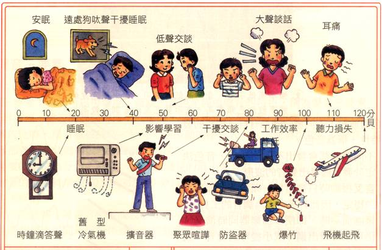
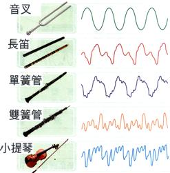
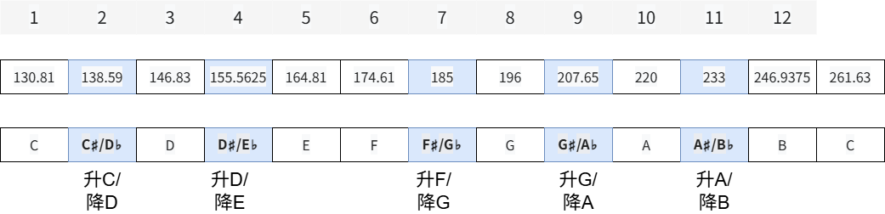
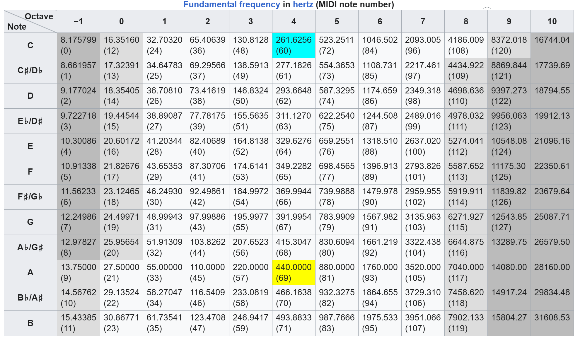

基础乐理-启蒙
音乐怎么来的
音是由物体震动产生，引出四个震动参数：咋震动(音调)，震多大（响度），啥在震（音色），震多久（长短），前三个是声音的三个特性，音乐还多一个长短条件。
下面是对这四个参数的解释，参考了
- 音调（咋震动）：即物体震动频率。震动频率越快，音调越高。如弦乐器的弦越细，越短，越紧，音调越高。
- 响度（震多大）：即物体震动幅度。手机调整音量大小就是在调整响度。

- 音色（啥在震）：即物体震动的波形。钢琴，架子鼓，吉他，笛子的音色听起来都不一样。

- 长短（震多久）：即音的持续时间和不同音直接的比例长度。比如决战时bgm可能音又多又急促，离别时bgm可能是悠长的。
音色 + 响度 = 听上去的感受
音调 + 长短 = 作品的样子
比如对于 <<生日快乐>> 这首歌，用钢琴和二胡分别弹奏（不同音色）就是两种不同感受，后者感觉怪怪的😅
但是不论用钢琴或者吉他（不同音色）演奏这首歌，保持音调和音的长短不变，我们就还可以听出来这首歌是什么。
绝对音高
物体一秒震动 x 次定义为 x Hz，健康的人类耳朵能听到的声音频率范围通常是 20 赫兹 (Hz) 到 20,000 赫兹 (Hz)。
那么就有
| 频率(Hz) | 音名 | 唱名 |
|---|---|---|
| 493.88 | B | do |
| 440.00 | A | ri |
| 392.00 | G | mi |
| 349.23 | F | fa |
| 329.63 | E | sol |
| 293.66 | D | la |
| 261.63 | C | si |
用这样的震动频率来命名就是绝对音高。
用来代替频率的 C，D，E，F，G，A，B 就是音名。
do, ri, mi, fa, sol, la, xi 就是唱名。
对于频率不断翻倍或者减半的音还是同样的音名。因为人耳对音高的感觉主要取决于频率比而不是频率差。
对于 220Hz, 440Hz, 880Hz, 人们一般认为音差相同，所以都为 A 音。
音律
定义： 各个音的绝对准确高度和他们的相互关系。是确定调试和音高的基础。
十二平均律

以这个图为例，将两倍频率间隔分为 12 份（后一个频率大概是前一个频率的1.0594倍），12 个音中有七个为 C,D,E,F,G,A,B,
剩下的 5 个音可以叫做之前小频率的升音或者后面大频率的降音。如 C 音与 D 音之间的音叫做升C或降D。
从 C 音到 B 音之间为 1 组，每组都有 12 个音像这样由 12 个间隔相等的音组成的音律为 12 平均律。
升符号 = ♯ ， 降符号 = ♭
半音全音
在 12 平均律里面，每个音到相邻音之间的距离为半音， 如 C 到升C降D，D到升D降E。两个半音的距离为全音。
音的分组
贴一张 wiki 上的音表

一共有九组，因为每组音名都相同，这里有一个区分叫法的习惯。
先定义 16.35 Hz 到 30.86 Hz 为第 0 组，之后每一列的组号加 1。称呼音时先说音名后说组号
如 16.35 Hz 为 C0, 261.63 Hz 为 C4 等。
固定调唱名法
用字母和数字来确定唯一音高
调式
TODO
本博客所有文章除特别声明外，均采用 CC BY-NC-SA 4.0 许可协议。转载请注明来源 窝窝乡！
评论